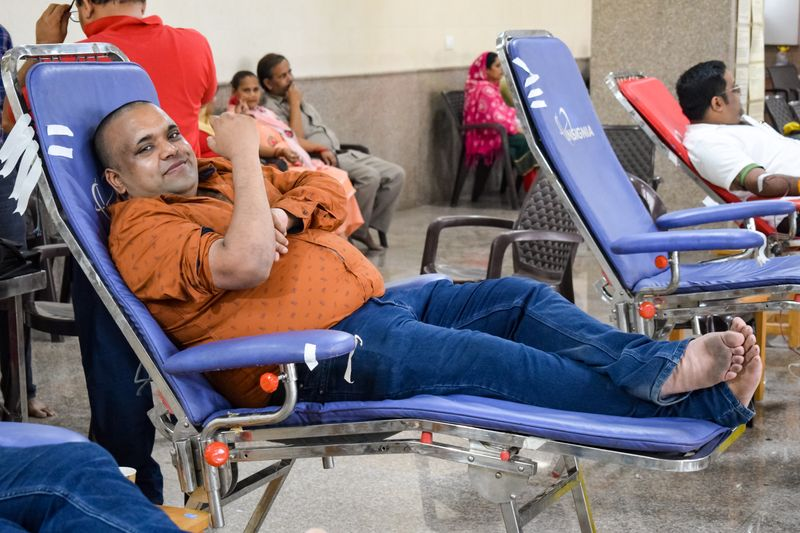
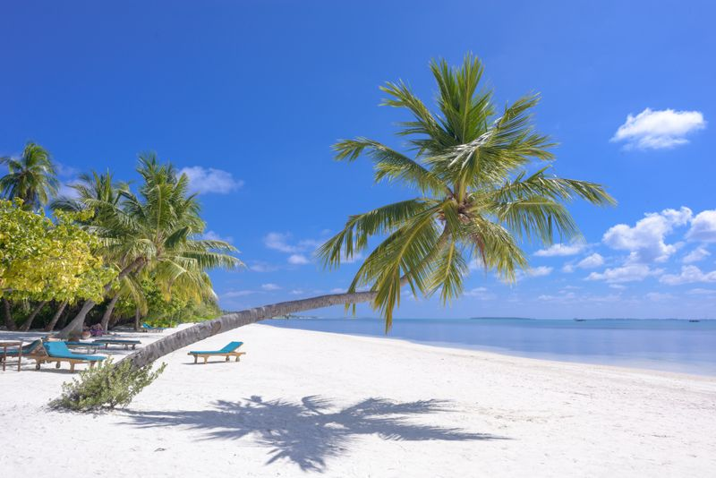
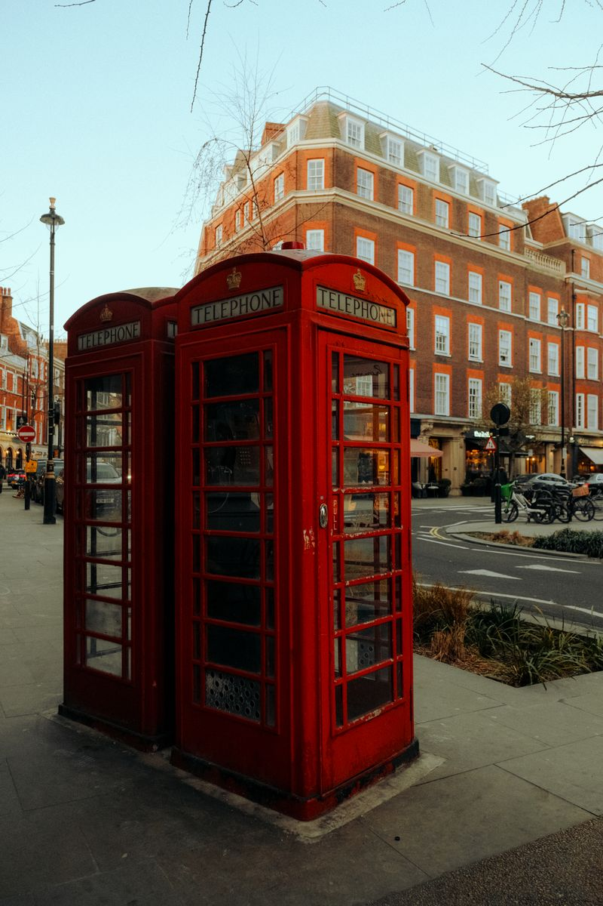

Explore Scenic Destinations
From Kandy
Rent a self-drive car or scooter with Danan Rentals and explore Sri Lanka's most iconic attractions at your own pace with 200 free kilometers per day.
 5 Mins from Kandy
5 Mins from Kandy
Dalada Maligawa (Temple of Tooth)
The sacred heart of Kandy housing the Tooth Relic of Lord Buddha, set beside the scenic Kandy Lake.
Gampola Ambuluwawa Tower
Iconic multi-religious spiral tower offering breathtaking 360-degree mountain views high above Gampola.

3 Hours from KandyHorton Plains & World's End
High-altitude plateau with misty cloud forests and the dramatic 4,000 ft vertical drop at World's End precipice.

2.5 Hours from KandyNuwara Eliya (Little England)
Lush green tea plantations, cool mountain climate, Gregory Lake, colonial bungalows, and cascading waterfalls.
 2.5 Hours from Kandy
2.5 Hours from Kandy
Sigiriya Lion Rock Fortress
Ancient 5th-century palace fortress built atop a 200m giant rock, renowned for ancient wall frescoes and water gardens.

2 Hours from KandyDambulla Golden Cave Temple
Sri Lanka's largest preserved cave temple complex containing 153 statues of Lord Buddha and vibrant ceiling frescoes.
Riverston Peak & Pitawala Pathana
Windy mountain ridges, Mini World's End cliff view, and pristine trekking trails through Knuckles conservation forest.
Bahirawakanda Buddha Statue
Towering 88ft giant white Buddha statue overlooking Kandy city, offering spectacular sunset and city lights view.
Ella & Nine Arch Bridge (ඇල්ල)
Iconic colonial stone railway bridge surrounded by lush tea valleys, Little Adam's Peak, and Ravana Falls.
Scenic Mountain Roads
Hill country roads feature breathtaking curves and misty views. Our automatic hatchbacks, hybrids, and automatic scooters make driving effortlessly smooth.
200 Free KM Every 24h
Every Danan rental includes 200 free kilometers per day, allowing you to visit Sigiriya, Nuwara Eliya, or Ambuluwawa with zero mileage worries.
24/7 Roadside Support
Travel with total peace of mind. Our friendly local team is always on call via WhatsApp to provide breakdown assistance and route guidance.